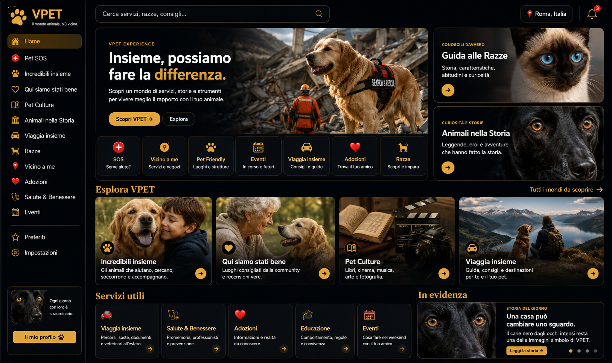

Le ultime funzioni sono ora direttamente in dashboard: nessun menu nascosto, ogni card apre una sezione reale.
Ogni apertura di VPET può farti scoprire una curiosità, un personaggio, un comportamento o una storia.
Attori e personaggi che hanno avuto un rapporto speciale con gli animali. Tocca una foto per entrare nella storia.
Scienziati, naturalisti e figure pubbliche che hanno dedicato una parte importante della propria vita agli animali.
Leggi, viaggi, salute, alimentazione, lettiera, comportamento e fine vita. Risposte pratiche con indicazione della fonte da verificare.
Nuovi strumenti pratici direttamente in dashboard. Tutto ciò che era già presente resta invariato.
Un tour rapido delle funzioni e una guida completa da leggere o scaricare.
Video dimostrativo delle principali aree del sito.
Funzioni spiegate in modo semplice, anche da smartphone.
Apri la guida PDFScarica il PDF